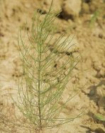
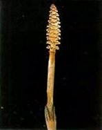
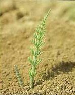

MEZEI ZSURLÓ
EQUISETUM ARVENSE L. (EQUAR)
ÉLETFORMA: G1
ÉLETCIKLUSA: A mezei zsurló a harasztok törzséhez
tartozik. Életciklusának két jól elkülöníthető szakasza van. Az első a kora
tavaszi termő, fertilis szakasz, a másik a nyári sterilis szakasz. I. Termő vagy
fertilis szakasz. A növénynek kiterjedt, dúsan elágazó tarackrendszere van. A
tarackok nóduszokkal tagoltak, melyeken rügyek ülnek. E rügyekből föld feletti
hajtások, gyökerek és új tarackok egyaránt képződhetnek. A nóduszokat vékony
gyökérkoszorú veszi körül. A rügyek egy részéből már ősszel fejlődésnek
indulnak a termő hajtáskezdemények, melyek rendszerint a talaj felső szintjéig
nőnek. A kora tavasszal, már márciusban gyors fejlődésnek indulnak. A spóraképző
termő szár 20-30 cm magas, 3-5 mm vastag, sárgás vagy vörösesbarna színű,
elágazás nélküli. Barna levélörvöket és hajtástengelyének végén barkaszerű
sporofillumfüzért visel. A spóratartó levelek (sporofillumok) a tengely felé eső
oldalukon 6-10 zsákszerű sporangiumot viselnek. A spórák a sporangiumokon belül
képződnek. A mezei zsurló homoiospórás haraszt, mivel spórái alaki szempontból
megegyeznek ugyan, de ivarjellegükben eltérnek egymástól, s az egyikből hím
jellegű, a másikból női jellegű előtelep lesz. A spórák zöld színűek és 4-4
hosszú nyúlványt, ún. elaterát viselnek, melyek repítőkészülékként foghatók
fel. A hím jellegű spórákból kevéssé tagolt, lapos, zöld hím előtelep, s rajta
antheridiumok lesznek, a női jellegű spórákból erősebben tagolt, lapos, zöld női
előtelepek, s rajta archegóniumok fejlődnek. A megtermékenyítés itt is a víz
segítségével történik. Az ivarsejtek egyesülése után visszaáll a diploid
állapot. A zigóta felső részéből hajtás fejlődik, az alsó részből pedig az
elsődleges gyökér, amely gyorsan elhal, szerepét járulékos gyökerek veszik át és
megindítják a tarackképzést. A spóraképző termő szárak a spórák szóródása
után gyorsan elhalnak. 2. Vegetatív szakasz. A termő szárak elhalását követően a
tavasz végén megindul a tarackok nóduszain ülő vagy a terminális rügyekből a
steril vagy meddő szárak képzése. A szárak 10-30 cm magasak, 5-6 mm vastagok,
bordázottak. Minden nódusznál örvös elhelyezkedésben 6-12 oldalszár látható. Az
oldalszárak négyélűek, gyakran elágazók. A meddő szárak zöldek vagy
szürkészöldek, kovaszemcséktől érdesek. A fagyok hatására elpusztulnak.
 |
 |